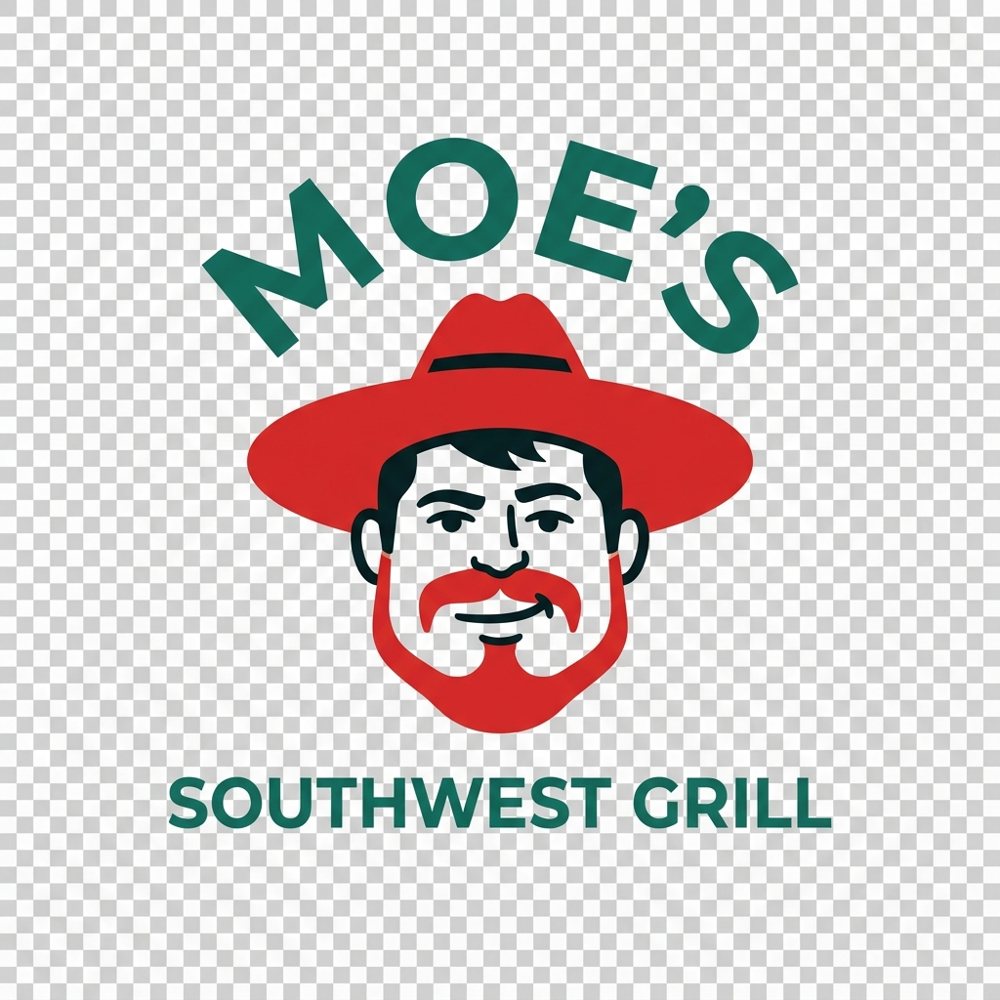

Moe's Southwest Grill Calories &
Nutrition Calculator
Use our interactive calorie calculator to customize your Moe's order. Select burritos, bowls, stacks, or quesadillas, choose your toppings, and track your macros instantly.
Build your order

Results are estimates based on common US menu nutrition data. Location recipes and portions may vary.
Moe's Southwest Grill Nutrition & Macro Tracking Guide
Moe's Southwest Grill is famous for its customizable southwestern food, signature salsas, and welcoming catchphrase: "Welcome to Moe's!". Because every burrito, bowl, and stack is made to order, calorie counts can fluctuate wildly depending on your selections. Our independent Moe's calorie calculator helps you build the perfect southwestern meal, track your macros in real-time, and make smart swaps. Looking to compare southwestern options? Check out our Chipotle Calorie Calculator or our Qdoba Calorie Calculator.
How to Use the Moe's Calorie Calculator
Calculating your macros at Moe's is quick and simple. Here is how to build your meal:
- Select Your Base: Choose a Homewrecker Burrito, a Homewrecker Bowl, a Stack, or Tacos.
- Choose Your Protein: Compare values for Grilled Steak, White Meat Chicken, organic Tofu, or Carnitas.
- Add Toppings & Salsas: See how toppings like Moe's Famous Queso, guacamole, cheese, and fresh salsas affect your calorie and fat limits.
Popular Moe's Menu Items & Their Macros
Plan your southwestern cravings with confidence by checking these base estimates (excluding extra toppings/sauces):
| Menu Item | Calories | Protein | Carbs | Fat |
|---|---|---|---|---|
| Homewrecker Burrito Base (with Tortilla) | 310 | 9g | 50g | 9g |
| Homewrecker Bowl Base (no Tortilla) | 45 | 1g | 9g | 0.5g |
| Adobo Chicken Portion | 160 | 19g | 1g | 9g |
| Sirloin Steak Portion | 130 | 17g | 1g | 6g |
| Organics Tofu Portion | 110 | 9g | 3g | 7g |
| Moe's Famous Queso (Side) | 230 | 7g | 6g | 20g |
Making Healthy Choices at Moe's
Moe's makes eating healthy easy with fresh ingredients, but signature items like queso and chips can double your calories. Keep these tips in mind:
Bowl Over Burrito
A standard flour tortilla adds 310 calories and 50g of carbs to your burrito. Choosing a Burrito Bowl instead instantly saves you those calories, allowing you to load up on healthy toppings like black beans and corn salsa.
Smart Sauce & Queso Management
Moe's Famous Queso is legendary, but a standard side serving adds 230 calories and 20g of fat. If you want to cut down on fat, stick to fresh salsas like Pico de Gallo (5 cal) or Kaiser Salsa (10 cal) for bold flavor with almost zero calories.
Watch the Chips
Every meal at Moe's comes with free chips, but a standard basket of chips adds 370 calories and 19g of fat. Skip the chips or split them with a friend to keep your macros clean.
Frequently Asked Questions (FAQs)
What is a Moe's "Stack"?
A Moe's Stack is a customizable item featuring your choice of protein and toppings, folded between two crunchy corn shells and wrapped in a grilled flour tortilla (similar to a crunchwrap). It averages 600-800 calories depending on toppings.
Is the guacamole free at Moe's?
Yes, at Moe's, guacamole is included for free on the Homewrecker Burrito and Homewrecker Bowl. For other items, it is an add-on.
Does Moe's have vegan options?
Yes, Moe's offers organic Tofu, black beans, pinto beans, and a wide array of fresh salsas and veggies, making it highly vegan-friendly.
Is Moe's suitable for a keto diet?
Yes. Build a Burrito Bowl with a salad/lettuce base, double protein (chicken/steak), cheese, sour cream, and guacamole for a perfect high-fat, high-protein, low-carb keto meal.
Southwestern Flavor.
Clear information.
This Moe's Southwest Grill calorie calculator helps you quickly check the nutrition of customizable southwestern favorites. Choose a burrito, bowl, or stack, customize it with fresh proteins and toppings, and see how ingredients like Famous Queso or Tofu affect your meal.
Actual values can vary depending on local food assembly and menu changes. Check Moe's official website for exact current allergen and nutrition information.
Moe's
questions.
How many calories are in Moe's Famous Queso?+
Moe's Famous Queso contains roughly 230 calories and 20g of fat per serving.
What is the difference between Homewrecker and Joey Bag of Donuts?+
The Homewrecker is a larger burrito and includes guacamole. The Joey Bag of Donuts is slightly smaller and does not include guacamole by default.
Is this an official Moe's tool?+
No. NutriRoute is independent and is not affiliated with Moe's Southwest Grill. This page is for information only.